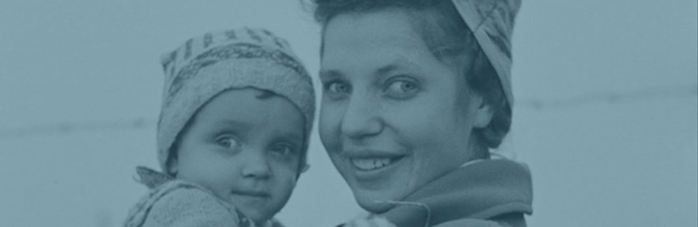

Style Guide
Farver
Orange
#B86427
Grå
#f6f6f6
Blå
#1b768b
Grøn
#3c9073
Billede overlay

Ikoner
Mere Info
<div class="btn">Mere Info </div>
.btn {
clear: both;
height: 30px;
width: 110px;
background-color: #B86427;
color: white;
font-size: 22px;
border-radius: 8px;
}
<div class="btn-toggle-nav" onclick="toggleNav()</div>
.btn-toggle-nav {
margin: 10px;
padding: 25px;
background-image: url("img/menu.svg");
background-repeat: no-repeat;
background-size: 60%;
background-position: center;
cursor: pointer;
z-index: 2000;
}
.btn-toggle-nav:hover {
border: 6px;
border-radius: 26px;
padding: 26px;
}
.btn {
clear: both;
height: 30px;
width: 110px;
background-color: #B86427;
color: white;
font-size: 22px;
border-radius: 8px;
}

Mere Info
Mere Info
Typografi
For at skabe tydelig visuel kontrast mellem børne- og voksenområdet i appen, er der udvalgt to forskellige skrifttyper.
Til voksenområdet bruges Roboto med høj læsbarhed til brødtekster på skærm og en afrundet, imødekommende form.
Til børneområdet er der valgt Patrick Hand. Med sit legende, håndskrevne udtryk taler den et visuelt sprog, som børn kulturelt vil opfatte som rettet mod dem. Denne font bruges udelukkende i versaler til overskrifter og til kortere tekster på faktaboksene.